The slide of the lecture is on the left, the same figure on the right, computed in the browser from the same data. The ▶ button moves the parameter step by step.
From Markowitz to the CAPM · Estimating Beta · Testing the CAPM · Multifactor Models · Fama–MacBeth Regressions · Latent Factors: PCA and IPCA · Factor Investing · Case Studies: the Replication Crisis and Factor Momentum · AI for Scientific Discovery
From Markowitz to the CAPM
The Efficient Frontier of US Sectors
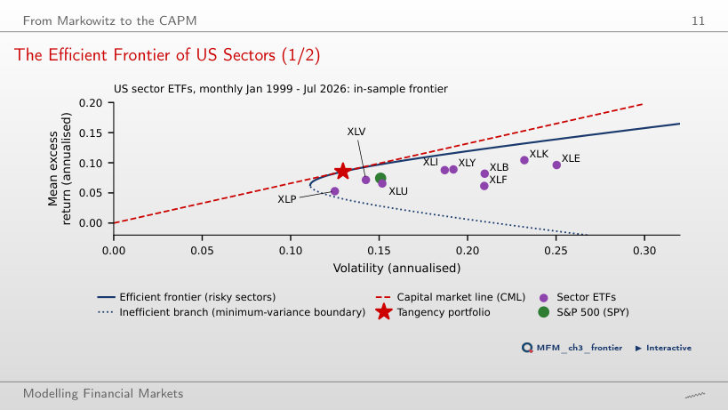
Answer
No. The tangency portfolio is optimised in sample, so the difference requires a statistical assessment. With SPY as the benchmark, the GRS test on the nine sectors gives approximately 0.72, with p = 0.69. The slides separately report GRS = 0.53, with p = 0.85, using Mkt-RF. Neither test rejects at 5%; this does not establish that the model is correct. The tangency portfolio holds large short positions: −0.37 in XLF and −0.21 in XLB.
Estimating Beta
The Beta of the Technology ETF (XLK) in the Data
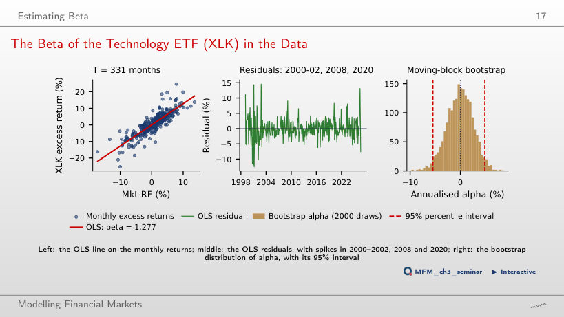
Answer
No. Newey–West retains the OLS coefficients and changes their estimated covariance matrix; it neither reweights observations nor applies shrinkage. Beta remains 1.277. Estimated annual alpha is 0.33%, with t = 0.13. The 95% bootstrap interval, [−5.5%, 4.9%], includes zero: we do not reject zero alpha at 5%.
Choices That Change an Estimated Beta
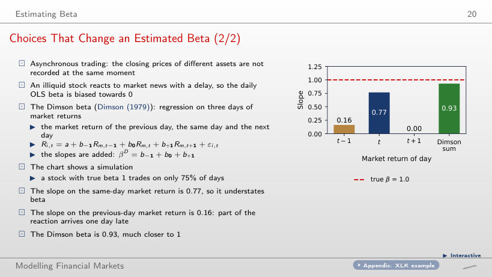
Answer
The contemporaneous slope rises from 0.77 to approximately 1.00. With daily trading, non-trading days no longer delay the response. The Dimson sum is approximately 0.98; in a finite sample it need not equal 1 exactly. At 75%, the slope on the previous-day market return is 0.16, and the Dimson sum 0.93.
Betas Are Not Constant
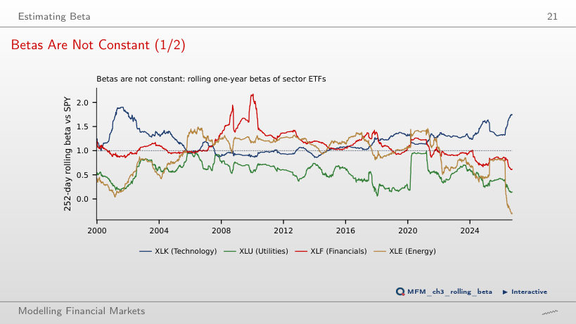
Answer
The range changes from [−0.31, 1.49] to [0.20, 1.38]. The longer window smooths the observed variation. This does not establish that true beta is constant. The XLF beta moves between 0.60 and 2.17 at 252 days, with its maximum right after the 2008–2009 banking crisis.
Testing the CAPM
The Test Assets: 25 Size × B/M Portfolios
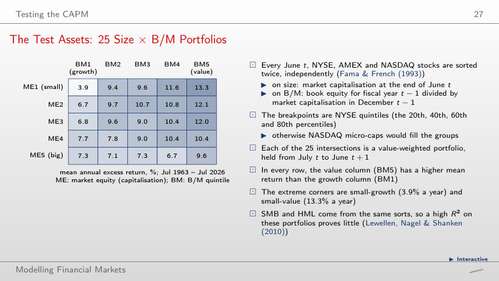
Answer
The difference increases from approximately 9.46 to 12.00 percentage points a year: the mean returns are 3.9% for small growth and 13.3% for small value, and the CAPM alphas −6.3% and +5.7%. Small-growth beta is approximately 1.42, versus 1.06 for small value; CAPM subtracts a larger market component from small-growth returns. The adjustment does not subtract the same amount from both returns.
The Security Market Line in the Data
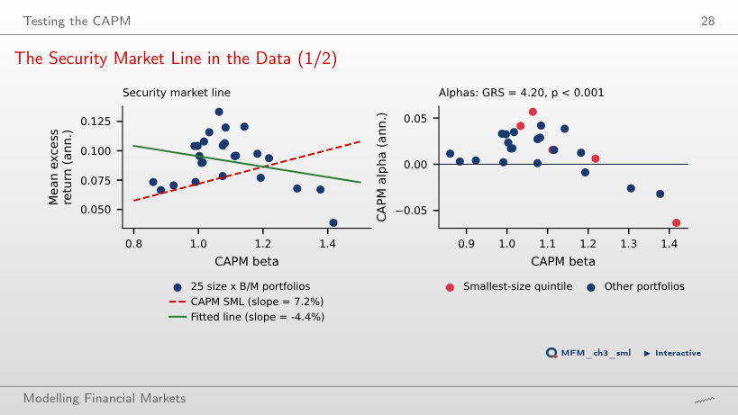
Answer
For January 2003–July 2026, the fitted slope is approximately +2.0% a year, while the market premium is 10.7%. The slope's sign depends on the sample: it is −4.4% when starting in 1963 and −1.0% when starting in 2006. From 1963, the betas cover only 0.86–1.42, and GRS = 4.20, with p = 7.5 × 10−11 (rounded on the slide: 8 × 10−11).
Multifactor Models
Cumulative Returns of the Six Factors, 1963–2026
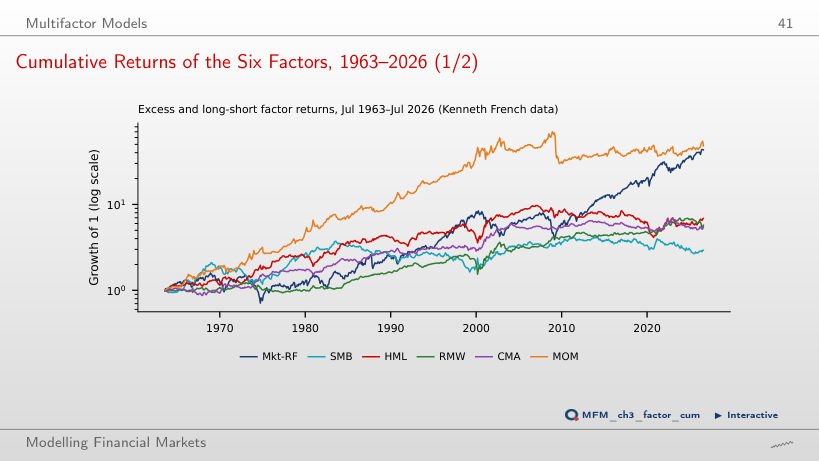
Answer
Mkt-RF reaches approximately 3.4, versus 1.0 for MOM. Starting in July 1963, the ranking was reversed: MOM reached 48.0 and Mkt-RF 43.2. These indices multiply (1 + the monthly factor return), starting from 1; they do not automatically represent investable strategies with identical financing. Momentum lost heavily when the market rebounded in 2009.
Fama–MacBeth Regressions
Estimated Risk Premia
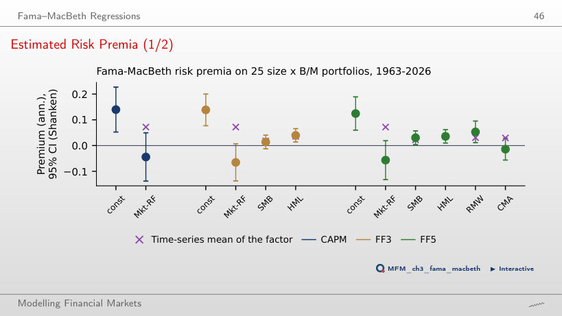
Answer
Market betas vary little across portfolios: 0.89–1.14 in FF3. This limited dispersion makes it difficult to separate the market premium from the intercept. The negative estimate does not establish investors' preferences for risk. The Shanken correction changes standard errors, not the premium estimate. For HML, the estimated premium (4.0%) is close to the factor mean (3.6%).
Latent Factors: PCA and IPCA
PCA of the US Sector ETFs
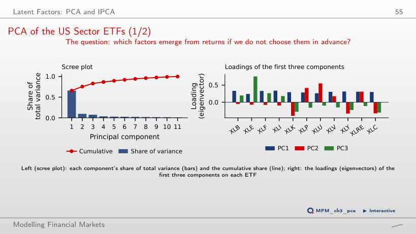
Answer
PC1 explains 36.6%, versus 66.0% in the full sample. Standardisation equalises the variances of the 11 input series, not those of the principal components. PC1's share is recomputed from the selected window's correlations. Over the full sample, the PC1 loadings are all positive (0.24–0.34) and the correlation of PC1 with SPY is 0.954; over the 252-day window it is 0.723.
Factor Investing
Factor ETFs versus the Market
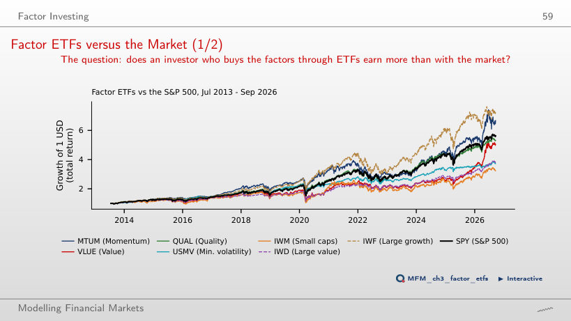
Answer
No. The CAGR difference describes realised compounded performance. CAPM alpha is the intercept in a regression of excess asset returns on excess market returns. Diversification does not impose a beta of 1. A conclusion about alpha requires its estimate and uncertainty. Since July 2013, only IWF and MTUM (15.5%) have a CAGR above SPY; QUAL has 13.5%, VLUE 13.1%, IWD 10.7%, USMV 10.5% and IWM 9.3%.
Case Studies: the Replication Crisis and Factor Momentum
Factor Momentum in the French Factors, 1964–2026
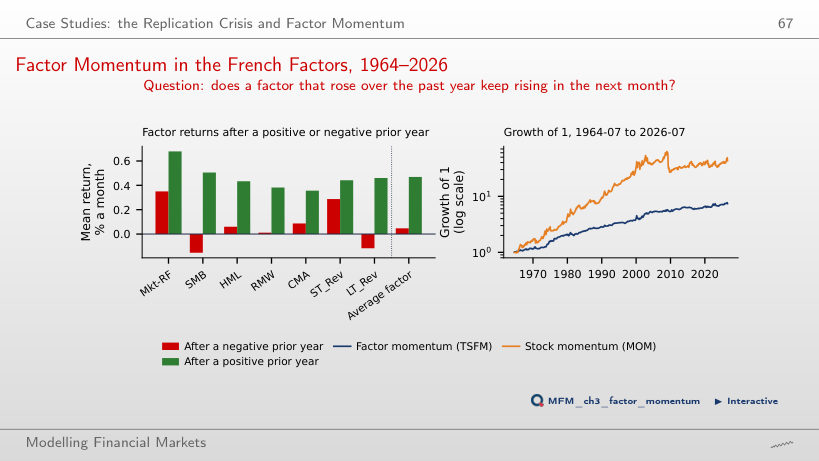
Answer
No. The FF5 alpha of MOM falls from 0.74% a month (t = 4.18) to 0.32% (t = 2.27) when TSFM is added, i.e. by 57%. With seven factors, factor momentum explains just over half of the MOM alpha, and the rest remains significant at 5%; the paper, with many more factors, explains most forms of momentum.
AI for Scientific Discovery
Mini-Case: Was Momentum Arbitraged Away?
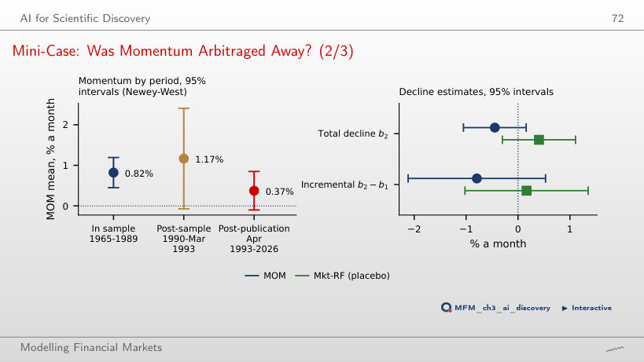
Answer
Yes. The t-statistic is the estimate divided by its standard error. Halving the standard error doubles the absolute t-statistic: 2.90 > 1.96. In the actual calculation, t = −1.45, the 95% interval is [−1.05%, 0.16%], and we do not reject. Even statistical significance would not by itself establish that publication caused the decline. The decline is 54% of the in-sample mean of 0.82% a month, close to the 58% in McLean and Pontiff (2016).
US ETFs: EODHD prices adjusted for dividends; excess returns use the risk-free rate of the Kenneth French Data Library. Fama–French factors, momentum, reversal and the 25 size × B/M portfolios: Kenneth French Data Library. Dimson beta: simulated data.